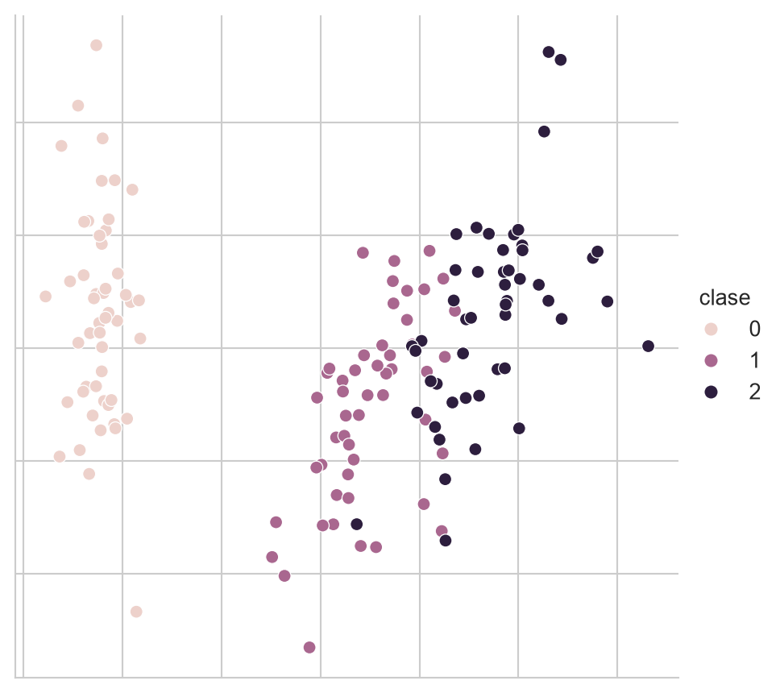
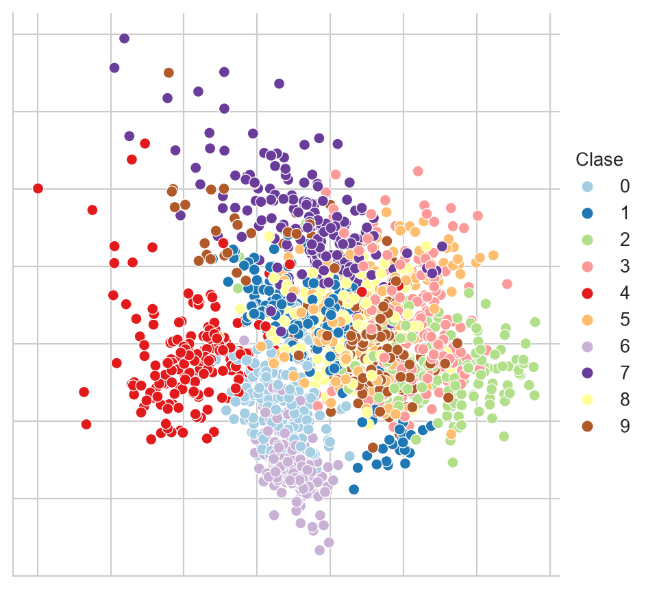
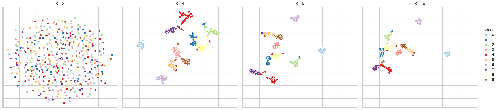
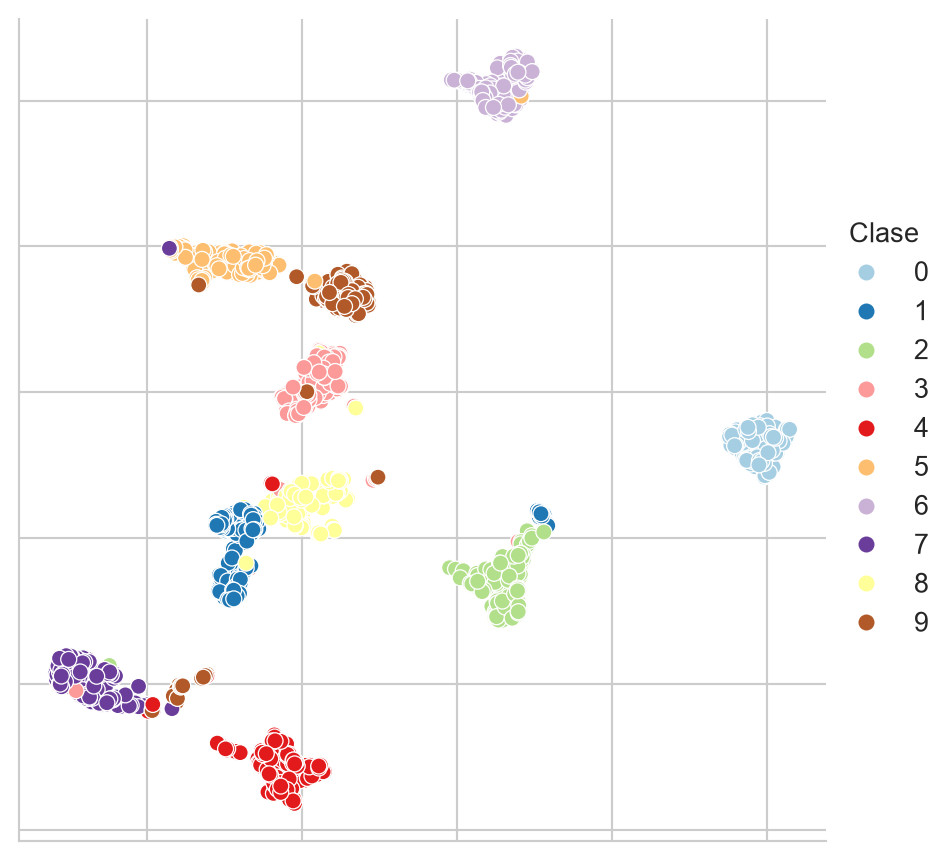

from sklearn.datasets import load_iris,\
load_digits
from sklearn.preprocessing import StandardScaler
from sklearn import decomposition
import umap
import numpy as np
import pandas as pd
import matplotlib as mpl
import seaborn as sns13 Reducción de Dimensión
El objetivo de la unidad es aplicar técnicas de reducción de dimensionalidad, para mejorar el aprendizaje y para visualizar los datos
Paquetes usados
13.1 Introducción
Existen ocasiones donde las variables que describen al problema no contribuyen dentro de la solución, o su aporte está dado por otras componentes de la descripción. Esto trae como consecuencia, en el mejor de los casos, que el algoritmo tenga un mayor costo computacional o, en un caso menos afortunado, que tenga un rendimiento menor al que se hubiera obtenido con una mejor representación. Es pertinente mencionar que el caso contrario, el incremento del número de variables, es también un escenario factible y se abordará en otra ocasión.
Reducir la dimensión de un problema es transformar la representación original \(x \in \mathbb R^d\) a una representación \(\hat x \in \mathbb R^m\) donde \(m < d\). Tiene dos usos: mejorar el aprendizaje, pues el objetivo es que la nueva representación \(\hat x\) contenga la información necesaria para realizar la tarea de clasificación o regresión; y visualizar los datos, reduciendo a \(\mathbb R^2\) o \(\mathbb R^3\), donde el objetivo es que se mantengan en la reducción las características de los datos en \(\mathbb R^d\).
La selección de variables, que escoge un subconjunto de las variables originales sin transformarlas, se trató en la Capítulo 4. Este capítulo trata las proyecciones, que construyen variables nuevas a partir de las originales: Análisis de Componentes Principales (PCA) y UMAP.
13.2 Análisis de Componentes Principales
Los métodos de selección de variables (Capítulo 4) requieren un conjunto de entrenamiento de aprendizaje supervisado, por lo que no podrían ser utilizados en problemas de aprendizaje no-supervisado. En esta sección se revisará el uso de Análisis de Componentes Principales (Principal Components Analysis - PCA) para la reducción de dimensión. PCA tiene la firma: \(f: \mathbb R^d \rightarrow \mathbb R^m\) donde \(m < d\)
La idea de PCA es buscar una matriz de proyección \(W^\intercal \in \mathbb R^{m \times d}\) tal que los elementos de \(\mathcal D = \{x_i\}\) sean transformados utilizando \(z = W^\intercal x\) donde \(z \in \mathbb R^m\). El objetivo es que la muestra \(z_1\) tenga la mayor variación posible. Es decir, se quiere observar en la primera característica de los elementos transformados la mayor variación; esto se puede lograr de la siguiente manera.
Si suponemos que \(\mathbf x \sim \mathcal N_d(\mu, \Sigma)\) y \(\mathbf w \in \mathbb R^d\) entonces \(\mathbf w \cdot \mathbf x \sim \mathcal N(\mathbf w \cdot \mu, \mathbf w^\intercal \Sigma \mathbf w)\) y por lo tanto \(\textsf{Var} (\mathbf w \cdot \mathbf x) = \mathbf w^\intercal \Sigma \mathbf w.\)
Utilizando esta información se puede describir el problema como encontrar \(\mathbf w_1\) tal que \(\textsf{Var}(\mathbf z_1)\) sea máxima, donde \(\textsf{Var}(\mathbf z_1) = \mathbf w_1^\intercal \Sigma \mathbf w_1.\) Dado que en este problema de optimización tiene múltiples soluciones, se busca además maximizar bajo la restricción de \(\mid\mid \mathbf w_1 \mid\mid = 1.\) Escribiéndolo como un problema de Lagrange quedaría como: \(\max_{\mathbf w_1} \mathbf w_1^\intercal \Sigma \mathbf w_1 - \alpha (\mathbf w_1 \cdot \mathbf w_1 - 1).\) Derivando con respecto a \(\mathbf w_1\) se tiene que la solución es: \(\Sigma \mathbf w_i = \alpha \mathbf w_i\) donde esto se cumple solo si \(\mathbf w_1\) es un vector propio de \(\Sigma\) y \(\alpha\) es el valor propio correspondiente. Para encontrar \(\mathbf w_2\) se requiere \(\mid\mid \mathbf w_2 \mid\mid = 1\) y que los vectores sean ortogonales, es decir, \(\mathbf w_2 \cdot \mathbf w_1 = 0.\) Realizando las operaciones necesarias se encuentra que \(\mathbf w_2\) corresponde al segundo vector propio y así sucesivamente.
13.2.1 Ejemplo - Visualización
Supongamos que deseamos visualizar los ejemplos del problema del iris. Los ejemplos se encuentran en \(\mathbb R^4\) entonces para poderlos graficar en \(\mathbb R^2\) se requiere realizar una transformación como podría ser Análisis de Componentes Principales.
Empezamos por cargar los datos del problema tal y como se muestra en la siguiente instrucción, en la segunda línea se normalizan los datos para tener una media \(0\) y desviación estándar \(1\), este procedimiento es necesario cuando los valores de las características se encuentran en diferentes escalas.
D, y = load_iris(return_X_y=True)
D = StandardScaler().fit_transform(D)Habiendo importado los datos el siguiente paso es inicializar la clase de PCA, para esto requerimos especificar el parámetro que indica el número de componentes deseado, dado que el objetivo es representar en \(\mathbb R^2\) los datos, entonces ocupamos dos componentes. La primera línea inicializa la clase de PCA, después, en la segunda línea se hace la proyección.
pca = decomposition.PCA(n_components=2).fit(D)
Xn = pca.transform(D)El siguiente código se utiliza para visualizar los datos. El resultado se muestra en la Figura 13.1, donde se observa en diferente color cada una de las clases.
Código
data = pd.DataFrame([dict(x=x, y=y, clase=c)
for (x, y), c in zip(Xn, y)])
fig = sns.relplot(data, kind='scatter',
x='x', y='y', hue='clase')
fig.tick_params(bottom=False, top=False,
left=False, right=False,
labelbottom=False, labelleft=False)
fig.set(xlabel=None, ylabel=None)
13.3 UMAP: Uniform Manifold Approximation and Projection for Dimension Reduction
En esta sección se presenta el uso de UMAP propuesto por McInnes et al. (2020). UMAP es una técnica no lineal para reducir la dimensión y que con dimensiones bajas (\(d=2\)) permite tener una visualización de los datos. El ejemplo que se realizará es visualizar mediante UMAP los datos del problema de Dígitos, estos datos se pueden obtener con la siguiente instrucción; en estas instrucciones también se normalizan los datos para tener una media \(0\) y desviación estándar \(1.\)
D, y = load_digits(return_X_y=True)
D = StandardScaler().fit_transform(D)Con el objetivo de ilustrar la diferencia entre una técnica de proyección lineal como PCA con respecto a una técnica no lineal, la Figura 13.2 presenta la proyección del conjunto de Dígitos utilizando PCA. Como se puede observar en la figura, esta proyección no da una separación clara entre grupos, aunque sí se puede identificar una estructura, donde algunos números se encuentran en la periferia de la figura.
Código
pal = mpl.cm.Paired
pca = decomposition.PCA(n_components=2).fit(D)
Xn = pca.transform(D)
df = pd.DataFrame(Xn, columns=['x', 'y'])
df['Clase'] = y
fig = sns.relplot(df, kind='scatter',
legend='full', palette=pal,
x='x', y='y', hue='Clase')
fig.tick_params(bottom=False, top=False,
left=False, right=False,
labelbottom=False, labelleft=False)
fig.set(xlabel=None, ylabel=None)
UMAP genera una proyección que intuitivamente trata de preservar la distancia que existe entre los \(K\) vecinos cercanos en la dimensión original como en la dimensión destino. Por este motivo un parámetro importante de UMAP es la cantidad de vecinos, que tiene el efecto de priorizar la estructura global o local de los datos. En el siguiente código se realiza una exploración de este parámetro generando una visualización para \(K=[2, 4, 8, 16].\) El código que realiza esta exploración se muestra en las siguientes instrucciones.
df = pd.DataFrame()
for K in [2, 4, 8, 16]:
reducer = umap.UMAP(n_neighbors=K)
low_dim = reducer.fit_transform(D)
_ = pd.DataFrame(low_dim, columns=['x', 'y'])
_['Clase'] = y
_['K'] = K
df = pd.concat((df, _))La Figura 13.3 muestra las diferentes visualizaciones cuando el número de vecinos cambia en UMAP, se puede observar cómo para \(K=2\) la visualización no muestra ninguna estructura, pero partiendo de \(K=4\) se puede visualizar grupos que corresponden a los diferentes dígitos.
Código
fig = sns.relplot(df, kind='scatter', x='x', y='y',
legend='full', palette=pal,
hue='Clase', col='K')
fig.tick_params(bottom=False, top=False,
left=False, right=False,
labelbottom=False, labelleft=False)
fig.set(xlabel=None, ylabel=None) 
Con el objetivo de mostrar con mayor detalle los grupos encontrados, la Figura 13.4 muestra la visualización de \(K=8\) en ella se puede observar cómo los ejemplos se agrupan de acuerdo al dígito que representan, también se puede ver la similitud entre los diferentes dígitos y cómo algunos ejemplos están muy cerca a un grupo al cual no pertenecen.
Código
fig = sns.relplot(df[df.K==8], kind='scatter',
legend='full', palette=pal,
x='x', y='y', hue='Clase')
fig.tick_params(bottom=False, top=False,
left=False, right=False,
labelbottom=False, labelleft=False)
fig.set(xlabel=None, ylabel=None)
13.4 Resumen
Reducir la dimensión es transformar la representación original en una con menos variables, ya sea para mejorar el aprendizaje o para visualizar los datos. A diferencia de la selección de variables (Capítulo 4), que escoge un subconjunto de las variables originales, las proyecciones construyen variables nuevas a partir de ellas. El Análisis de Componentes Principales (Sección 13.2) encuentra las direcciones de mayor varianza y produce una proyección lineal, mientras que UMAP (Sección 13.3) busca preservar la vecindad de los datos y puede revelar estructuras que una proyección lineal no muestra. La Figura 13.3 muestra además que el resultado de UMAP depende de sus hiperparámetros, por lo que debe leerse con cautela.
Cuando una visualización sugiere que los datos forman grupos, el paso siguiente es encontrarlos de manera formal, lo que se hace con los métodos de agrupamiento de Capítulo 14.